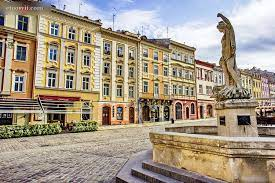
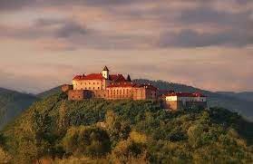
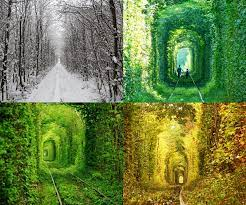
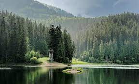
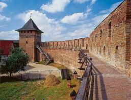

Площа Ринок у Львові
Екскурсії по Львову здатні затягнути вас надовго, адже місто Лева настільки багате на різні пам'ятки та цікаві місця, що, напевно, не вистачить навіть місяця, щоб все подивитися
Але площа Ринок - це щось унікальне. На цій відносної невеликій центральній площі міста можна побачити весь середньовічний Львів. Кожна скульптура, кожна будівля тут має свою унікальну історію або легенду. Площа Ринок - це унікальний музей під відкритим небом, побачити який просто зобов'язаний будь-який турист!
Мукачівський замок Паланок
Одне з перших місць, яке необхідно побачити під час екскурсії в Мукачево - знаменита фортеця, яка гордо височіє над містом.
Фундаментом замку стала стародавня вулканічна гора, а саме місто будувався пізніше, саме навколо цієї величної фортеці, в якій люди ховалися від набігів численних ворогів.
Тунель Любові
Автобусні тури по Україні просто неможливі без поїздки до Рівного. Справжні романтики обов'язково повинні побачити тут одне з найпрекрасніших місць - знаменитий Тунель Любові.
Зелений тунель, який виріс навколо старого залізничного полотна - це просто ідеальне місце для прогулянок і фотосесій зі своєю другою половинкою, адже він надзвичайно гарний в будь-який час року.
Озеро Синевир
Справжня родзинка Карпат, і, безумовно, найкрасивіше озеро у всій країні, Синевир вартий того, щоб відправитися в тури вихідного дня з Києва по Україні, і поїхати саме сюди - в один з найкрасивіших регіонів Закарпаття - Міжгірщину.
Природа в околицях цього чуда просто приголомшливо, первісно красива, а розташований неподалік Національний парк Синевир - просто відмінне місце для прогулянок і рафтингу на швидких річках Чорна річка і Теребля.
Луцький замок
Замок Любарта, або Луцький замок - це унікальний архітектурний пам'ятник, який входить в ТОП-7 чудес України. Тур в Луцьк.
Варто зазначити, що Луцький замок має і підземелля. Можливо, від нього є хід в сторону католицького собору, розташованого за 100 метрів від замку. Вважається, що нерівності на Замковій площі підтверджують ці припущення.